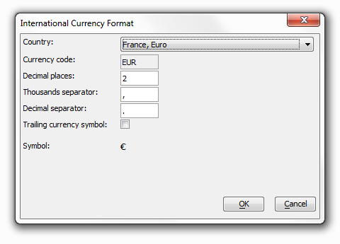
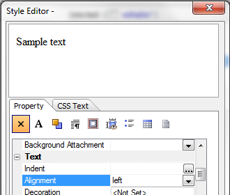
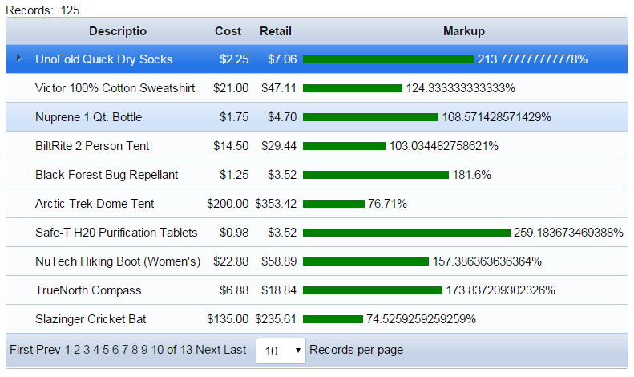

A Simple Bar Chart
|
Make sure the Design tab of the Grid Builder is open. Click on Component Type at the top of the tree menu.
With the Component Type page open, go to the Grid Layout menu in the middle of the page and select Tabular.
Leave the Grid is: Read only radio button on the Component Type page selected.
On the design tree menu select the Grid > Data Source page.
On the Data Source page select the .dbf Tables radio button.
Go back to the design tree menu and click on Grid > Query (DBF).
Select the 'Display data from: Table' radio button at the top of the Grid > Query(DBF) page.
-
Next to the Table name: setting click the to open a drop down of all the tables in Alphasports. Select the "product" table.
Click Calculated Fields to display the Define Calculated Fields dialog.
Enter the following expression and click OK. This creates a new calculated field named "Markup".
|
Selecting the Fields to Display
-
In the design tree menu click on the Grid > Fields page.
-
Move the "Description", "Cost", "Retail", and "Markup" fields from the Available Fields list to the Selected Fields list using the single right pointing arrow between the two lists .
-
You will need to set the currency type for your "Cost" and "Retail" fields. From the Selected list click on one of the two to start with.
-
Now look at the Field Properties menu on the right-hand side of the screen. Go to the Display Settings list and on the Display format option click
 to
open the Display Format dialog.
to
open the Display Format dialog. -
Click on the International Currency Format button. From the Country: drop-down list at the top of the International Currency Format Dialog choose a country and click OK. The formatCurrency function should appear in the Display Format Dialog. Click OK again and repeat the procedure for your second field.
|

-
From the Selected list click on the "Markup" field. In the Field Properties menu scroll down to Label Properties. Click the
 to open the Style Editor. In the Style
Editor scroll down to the Text property
menu. Find the Alignment property, click
the dropdown button, and select 'left'.
Click OK.
to open the Style Editor. In the Style
Editor scroll down to the Text property
menu. Find the Alignment property, click
the dropdown button, and select 'left'.
Click OK. -
With the "Markup" field still selected, scroll down the Field Properties to Column Properties. Click on the Freeform layout check box to check it.
-
Check to make sure there is no HTML code in the "Markup" field's Display Settings > Display format setting.
-
Click the
button in the Column Properties > Freeform template
property setting to display the Free-form Column Layout
dialog. A freeform field may contain any legitimate HTML code. In this case
it will contain an <div> tag. Enter the following
HTML
code into the dialog box and click OK.
When you publish the page later on, the value of the "Markup" field will replace the {Markup} place holder.
The background color will be the color of your bar chart.

Select Alignment for a Field
|
On the design menu click on the Grid >Properties page. Go to Layout options and click the Style name property. This will load the Select Style Dialog. Create a style sheet to your liking. Here I went to System under the Location menu and then chose ModBlue.
Scroll down the Grid > Properties menu until you get to the Shading and Dividers section. Clear the Alternate row shading check box.
Just below the Alternate row shading setting check the Shading and Dividers > Row separator check box.
Save the component as "ProductMarkup" and exit from the Grid Component Builder.
In the Web Project Control Panel toolbar click New. When the New File Dialog loads click A5W Page and Next >.
-
Still in the New File Dialog, choose 'Blank Page' from the options presented and click Next > again.
The HTML Editor will open. Click File > Save As, enter "ProductMarkupBarChart" in the File name field, and click Save.
From the toolbar at the top of the screen click on Insert Component.
-
When the Insert Component Dialog loads click on the Select button. Pick "ProductMarkup", from the Select Component Dialog that loads, and click OK.
-
Click OK the close the Insert Component Dialog.
-
Save the A5W page again then close the HTML Editor.
-
After returning to the Web Projects Control Panel, Right click the "ProductMarkupBarChart" A5W page you created. select Publish (Local Webroot) open.

- When your A5w file is published you should get something similar to this.
